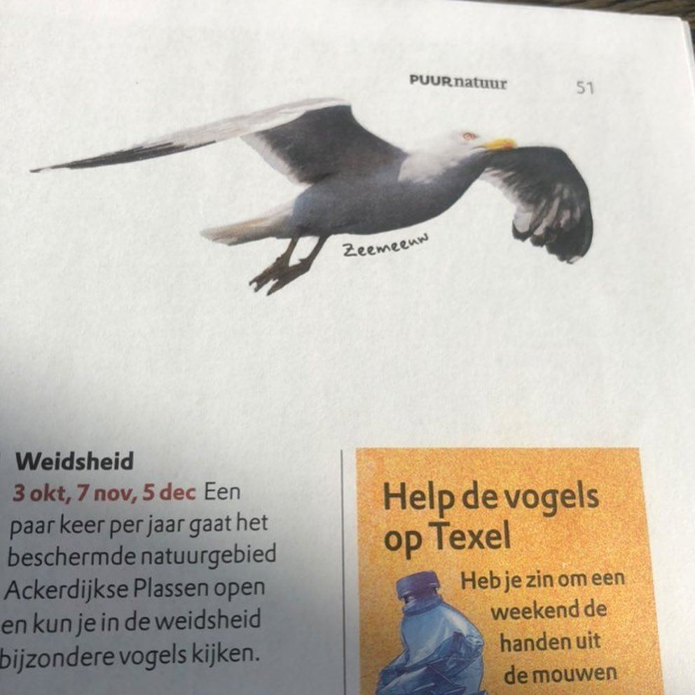
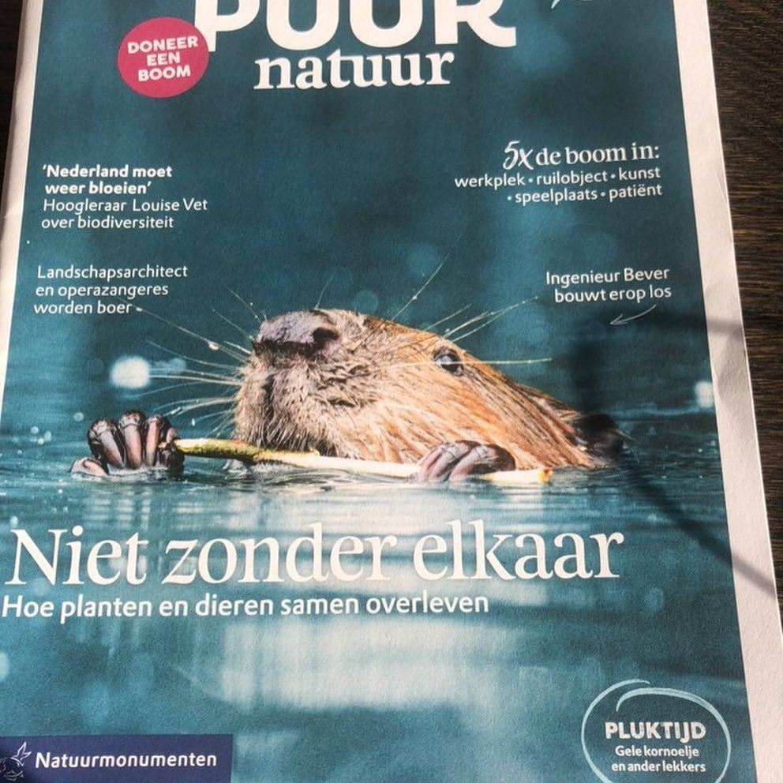

De zeemeeuw bestaat niet
7 november 2020 · Natuurmonumenten
- Op de foto
- Zeemeeuw
- Het ging over
- Meeuwensoort bij naam


Bij @natuurmonumenten komt de ‘zeemeeuw’ blijkbaar wel voor. Wij zoeken er zelf al jaren naar...
Bedankt @viggo_058 voor het insturen!